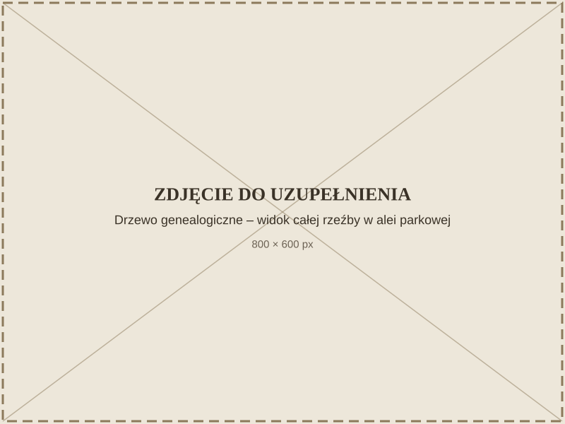
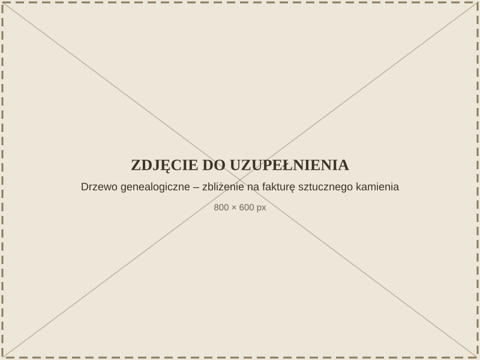

The Family Tree Sculpture in Stanisław Strzyżyński Alley
Recording
Expand the transcript
The open-air sculpture Family Tree was created in 1977 during a plein-air sculpture workshop that my father organised together with Jarosław Olejnicki, an artist and painter.
The sculpture symbolises the emergence of life. From an oval form emerge geometrised shapes, symbolising people and the emergence of new life — growing, however, from a certain foundation, from the heritage of previous generations.
Over a dozen designs for the Family Tree sculpture have survived. We made this sculpture together, in our garden, next to the studio. We made a model in clay, and then a cast in artificial stone. My father chose the spot for the sculpture himself, looking for the best setting in the park. It stands against a backdrop of spruce trees, by the alley.
On our initiative, the City Council passed a resolution naming this alley after Stanisław Strzyżyński. The official opening took place in June 2026. This is an important moment of honouring my father's memory, and the beginning of greater recognition for artists connected with Nałęczów.
Family Tree is an abstract, organic sculptural form created in 1977, made of artificial stone. Its branching shape evokes the bough of a tree and is read as a symbol of family ties, the continuity of generations, and intertwining human fates.

The sculpture was created during a plein-air sculpture workshop organised by Jarosław Olejnicki, chairman of the Society of Friends of Nałęczów (Towarzystwo Przyjaciół Nałęczowa). Plaques presenting the artist's biography stand along the alley.

The sculpture stands in Stanisław Strzyżyński Alley in the Spa Park — an alley that bears the artist's own name. It is a special, rarely seen coincidence: the creator walks through the park together with visitors, present not only in his works but also in the name of the place.
The form of the work remains open to interpretation — for some it is a family's genealogical tree, for others a universal symbol of growth and interconnection.
How to get there
The mini-map is currently unavailable.